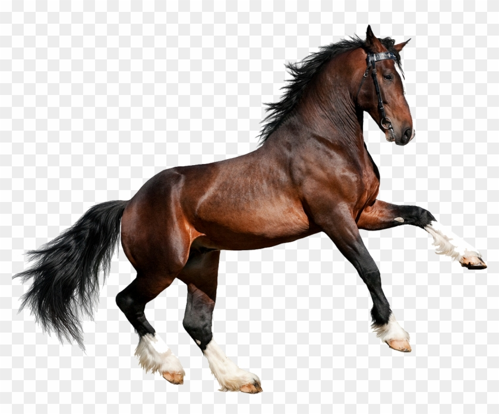

Deportes de los caballos
11/11/21
En que concisten los deportes y cuales hay
Existen varios deportes en los que se necesitan a los caballos, los deportes mas importantes o mas famosos se podría decir que son las carreras de caballos que corren la vuelta completa que son los caballos de pura sangre y están los caballos de cuarto de milla que como su nombre lo dice corren un cuarto de milla también hay otro tipo de caballo que ese caballo si corre mucho mas se podría decir que es como un c aballo maratonista que es el caballo árabe, hablando del polo se podría decir que es como el futbol combinado con hockey personas van arriba de sus caballos pegándole a una pelota intentando meter la pelota en la portería del contrario y defender su portería y el que más goles meta gana.